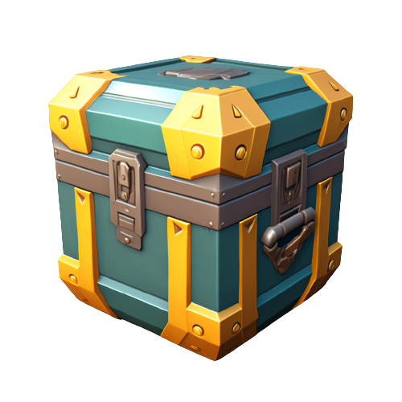

<div class="overlay"></div>
<div class="container">
  <div class="loot-opening-wrapper">
    <div class="blur-item"></div>
    <div class="loot-items">
      <ng-container *ngFor="let i of [].constructor(50)">
        <!-- This template will be repeated 5 times -->
        
      </ng-container>
    </div>
  </div>

  <ion-button (click)="openBox()">Open</ion-button>
  
</div>